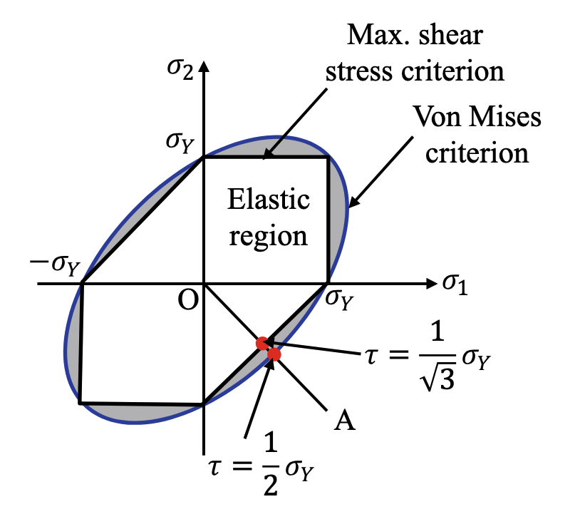
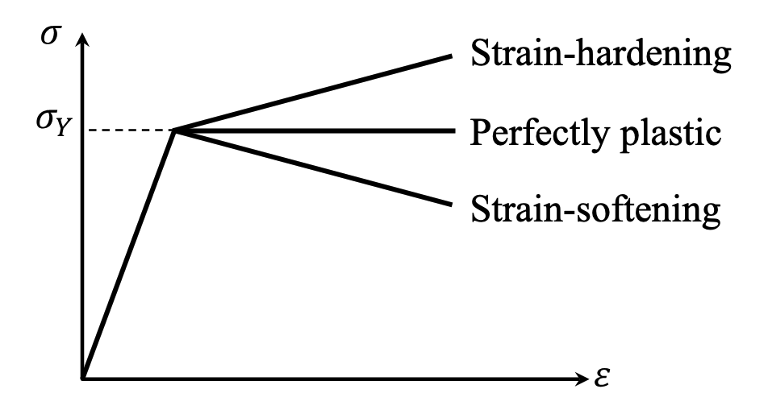
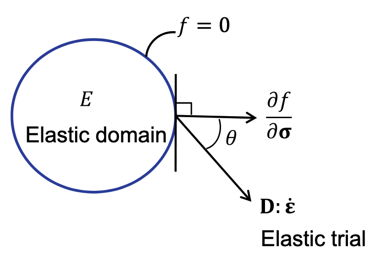
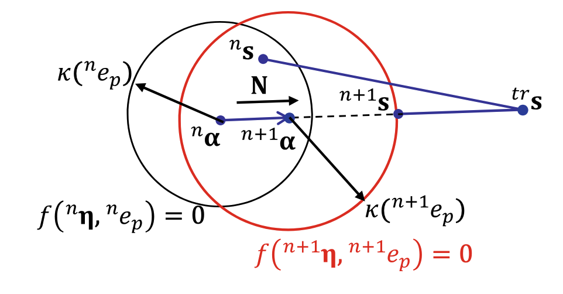

Chapter 4 Element Analysis for Elastoplastic Problems
Last updated: 16 Aug 2026
4.3 Multi-dimensional Elastoplasticity
4.3.1 Yield Functions and Yield Criteria
Maximum shear stress criterion (Tresca criterion)
The maximum shear stress can be defined with the three principal stresses \(\sigma_1\geq\sigma_2\geq\sigma_3\) as follows:
\[
\tau_{\text{max}} = \frac{\sigma_1 - \sigma_3}{2}
\]
This criterion assumes that material failure occurs when \(\tau_{\text{max}}\) is equal to the shear stress in a tensile specimen at yield (i.e., \(\sigma_{1} = \sigma_y\) and \(\sigma_{2}=\sigma_{3} = 0\) ), leading to the following yield condition:
\[
f(\boldsymbol{\sigma}) = \tau_{\text{max}} - \tau_y = \tau_{\text{max}} - \frac{1}{2}\sigma_y = 0
\]
Distortion energy criteria
The concept of distortion energy criterion is to compare the distortion energy of a multi-dimensional stress state to that of a tensile test at yield.
The deviatoric stress and strain tensors are defined as follows:
\[
\begin{align*}
&\boldsymbol{s}\equiv\boldsymbol{\sigma}-\sigma_m\boldsymbol{I} = \mathbb{I}_{\text{dev}}:\boldsymbol{\sigma},\\
&\boldsymbol{e}\equiv\boldsymbol{\varepsilon}-\varepsilon_m\boldsymbol{I}=\mathbb{I}_{\text{dev}}:\boldsymbol{\varepsilon},
\end{align*}
\]
where \(\mathbb{I}_{\text{dev}}\) is the fourth-order unit deviatoric tensor. \(\sigma_m=\frac{1}{3}\operatorname{tr}(\boldsymbol{\sigma})\) and \(\varepsilon_m=\frac{1}{3}\operatorname{tr}(\boldsymbol{\varepsilon})\) are the mean stress and mean strain, respectively.
For isotropic and linear elastic materials, the constitutive relation between the stress and strain can be written as:
\[
\begin{align*}
\boldsymbol{\sigma} &= [\lambda\boldsymbol{I} \otimes \boldsymbol{I} + 2 \mu \mathbb{I}] : \boldsymbol{\varepsilon} = \mathbb{D}:\boldsymbol{\varepsilon}\\
&=\lambda\operatorname{tr}(\boldsymbol{\varepsilon})\boldsymbol{I} + 2 \mu \boldsymbol{\varepsilon} \\
&= (3\lambda)\varepsilon_m\boldsymbol{I} + 2 \mu(\boldsymbol{e} + \varepsilon_m\boldsymbol{I})\\
&= (3\lambda + 2\mu)\varepsilon_m\boldsymbol{I} + 2 \mu \boldsymbol{e} \\
&= \sigma_m\boldsymbol{I} + \boldsymbol{s}
\end{align*}
\]
where \(\sigma_m = (3\lambda + 2\mu)\varepsilon_m=3K\varepsilon_m\) and \(\boldsymbol{s} = 2 \mu \boldsymbol{e}\) .
The distortion energy density can be defined as:
\[
U_d = \frac{1}{2}\boldsymbol{s}:\boldsymbol{e} = \frac{1}{2}\boldsymbol{s}:\frac{\boldsymbol{s}}{2\mu} = \frac{1}{4\mu}\boldsymbol{s}:\boldsymbol{s}
\]
In the case of a one-dimensional tensile test (i.e., \(\sigma_1 = \sigma_y\) and \(\sigma_2=\sigma_3 = 0\) ), the distortion energy density at yield can be expressed as:
\[
U_{d,\text{1D}} = \frac{1}{4\mu}\left(\frac{4}{9}\sigma_y^2 + \frac{1}{9}\sigma_y^2 + \frac{1}{9}\sigma_y^2\right) = \frac{1}{6\mu}\sigma_y^2
\]
With the above two equations, we can derive the following equivalent stress or Von Mises stress \(\sigma_e\) as:
\[
\sigma_e = \sqrt{\frac{3}{2}\boldsymbol{s}:\boldsymbol{s}} = \sigma_y
\]
The counterpart of the equivalent stress is the effective strain \(\varepsilon_e\) :
\[
\begin{align*}
U_d &= \frac{1}{2}\boldsymbol{s}:\boldsymbol{e} = \frac{1}{2}\sigma_ee_e\\
&=\frac{1}{4\mu}\boldsymbol{s}:\boldsymbol{s} = \frac{1}{4\mu}\frac{2}{3}\sigma_e^2 = \frac{1}{6\mu}\sigma_e^2 \\
&\Rightarrow e_e = \frac{\sigma_e}{3\mu} = \frac{1}{3\mu}\sqrt{\frac{3}{2}\boldsymbol{s}:\boldsymbol{s}} = \frac{1}{3\mu}\sqrt{\frac{3}{2}(2\mu)^2\boldsymbol{e}:\boldsymbol{e}} = \sqrt{\frac{2}{3}\boldsymbol{e}:\boldsymbol{e}}
\end{align*}
\]
4.3.2 Von Mises Yield Criterion
The equivalent stress \(\sigma_e\) can be expressed as follows:
\[
\sigma_e = \sqrt{\frac{3}{2}\boldsymbol{s}:\boldsymbol{s}} = \sqrt{3J_2}
\]
where the second invariant of the deviatoric stress tensor \(J_2\) is defined as:
\[
\begin{align*}
J_2 &= \frac{1}{6}[(\sigma_{11}-\sigma_{22})^2 + (\sigma_{22}-\sigma_{33})^2 + (\sigma_{33}-\sigma_{11})^2] + \tau_{12}^2 + \tau_{13}^2 + \tau_{23}^2\\
&=\frac{1}{6}[(\sigma_1-\sigma_2)^2 + (\sigma_2-\sigma_3)^2 + (\sigma_3-\sigma_1)^2]
\end{align*}
\]
The yield function can be defined as:
\[
f(\boldsymbol{\sigma}) = \sigma_e^2 - \sigma_y^2 = 3J_2 - \sigma_y^2 = 0
\]
or equivalently:
\[
f(\boldsymbol{\sigma}) = \Vert\boldsymbol{s}\Vert - \sqrt{\frac{2}{3}}\sigma_y = 0
\]
which corresponds a circular cylinder in the principal deviatoric stress space.

Von Mises yield criterion
Variation in the inter-molecular distance \(\Rightarrow\) Elastic deformation
Relative sliding of the atomic layers (a permanent shape change without changing the structural volume) \(\Rightarrow\) Plastic deformation
4.3.3 Hardening Models
Strain hardening : yield stress increases proportionally to plastic deformation (metals).Perfect plasticity : yield stress remains constant after yielding (only monotonic loading is of interest).Strain softening : yield stress decreases as plastic deformation increases (geotechnical materials).

Post-plastic behaviors of materials
Isotropic hardening
The subsequent yielding depends on the accumulated effective plastic strain \(e_p\) . For linear hardening model, the yield stress can be expressed as:
\[
\sigma_y = \sigma_{y}^0 + He_p
\]
where the plastic modulus \(H\) is obtained from the uniaxial stress-strain relationship:
\[
H = \frac{\Delta \sigma}{\Delta e_p}
\]
Kinematic hardening
The subsequent yield surfaces are shifted in the stress space, with the following shifted stess:
\[
\boldsymbol{\eta} = \boldsymbol{s} - \boldsymbol{\alpha}
\]
and the yield function can be expressed as:
\[
\Vert\boldsymbol{\eta}\Vert - \sqrt{\frac{2}{3}}\sigma_y = 0
\]
According to the Ziegler's rule , the increment in back stress is written as:
\[
\Delta\boldsymbol{\alpha} = \sqrt{\frac{2}{3}}H\Delta e_p\frac{\boldsymbol{\eta}}{\Vert\boldsymbol{\eta}\Vert}
\]
where the back stress \(\boldsymbol{\alpha}\) increases in parallel direction with the shifted stress.
Combined hardening
Isotropic hardening \(\Rightarrow\) Increase the radius of the yield surface
Kinematic hardening \(\Rightarrow\) Shift the center of the yield surface
A combined hardening model uses a parameter \(\beta\in[0,1]\) to consider this combined effect, i.e., Bauschinger effect :
\[
\begin{align*}
&\Vert\boldsymbol{\eta}\Vert - \sqrt{\frac{2}{3}}[\sigma_y^0 + (1-\beta) He_p] &= 0\\
&\Delta\boldsymbol{\alpha} = \sqrt{\frac{2}{3}}\beta H\Delta e_p\frac{\boldsymbol{\eta}}{\Vert\boldsymbol{\eta}\Vert}
\end{align*}
\]
4.3.4 Classical Elastoplasticity Model
1. Additive Decomposition
Under the assumption of small deformation, the total strain can be additively decomposed into elastic and plastic parts:
\[
\boldsymbol{\varepsilon} = \boldsymbol{\varepsilon}^e + \boldsymbol{\varepsilon}^p, \quad \dot{\boldsymbol{\varepsilon}} = \dot{\boldsymbol{\varepsilon}}^e + \dot{\boldsymbol{\varepsilon}}^p
\]
In static problems, the rate is equivalent to the load increment.
From the assumption that plastic deformation only occurs in the deviatoric space, the plastic strain \(\boldsymbol{\varepsilon}^p\) and its rate are deviatoric tensors .
2. Strain Energy Density
The strain energy density can be considered:
\[
U(\boldsymbol{\varepsilon}^e) = \frac{1}{2}\boldsymbol{\varepsilon}^e:\mathbb{D}:\boldsymbol{\varepsilon}^e = \frac{1}{2}(\boldsymbol{\varepsilon}-\boldsymbol{\varepsilon}^p):\mathbb{D}:(\boldsymbol{\varepsilon}-\boldsymbol{\varepsilon}^p)
\]
and the stress can be derived as:
\[
\boldsymbol{\sigma} = \frac{\partial U(\boldsymbol{\varepsilon}^e)}{\partial \boldsymbol{\varepsilon}^e} = \mathbb{D}:\boldsymbol{\varepsilon}^e = \mathbb{D}:(\boldsymbol{\varepsilon}-\boldsymbol{\varepsilon}^p)
\]
with the rate form as:
\[
\begin{align*}
\dot{\boldsymbol{\sigma}} &= \mathbb{D}:(\dot{\boldsymbol{\varepsilon}}-\dot{\boldsymbol{\varepsilon}}^p)\\
&=[(\lambda + \frac{2}{3}\mu)\boldsymbol{I}\otimes\boldsymbol{I}+ 2 \mu \mathbb{I}_{\text{dev}}]:(\dot{\boldsymbol{\varepsilon}}-\dot{\boldsymbol{\varepsilon}}^p)\\
&=(\lambda + \frac{2}{3}\mu)\operatorname{tr}(\dot{\boldsymbol{\varepsilon}}-\dot{\boldsymbol{\varepsilon}}^p)\boldsymbol{I} + 2 \mu(\dot{\boldsymbol{e}}-\dot{\boldsymbol{e}}^p)\\
&\quad\Downarrow\\
&\quad\Downarrow \text{tr}(\dot{\boldsymbol{\varepsilon}}^p)=0 \text{ from the assumption of }J_2 \text{ plasticity}\\
&\quad\Downarrow\\
&=(3\lambda + 2\mu)\dot{\varepsilon}_m\boldsymbol{I} + 2 \mu(\dot{\boldsymbol{e}}-\dot{\boldsymbol{e}}^p)\\
&=\dot{\sigma}_m\boldsymbol{I} + \dot{\boldsymbol{s}}
\end{align*}
\]
3. Yield Function
For metal plasticity, the Von Mises yield criterion with the associative flow rule os commonly used, with the yield criterion or yield function defined as:
\[
f(\boldsymbol{\eta},e_p) = \Vert\boldsymbol{\eta}\Vert - \sqrt{\frac{2}{3}}k(e_p) = 0
\]
where \(\boldsymbol{\eta} = \boldsymbol{s} - \boldsymbol{\alpha}\) is the shifted stress, \(k(e_p)\) is the radius of the elastic domain, and \(e_p\) is the effective plastic strain. The corresponding elastic domain forms a convex set as:
\[
E = \{(\boldsymbol{\eta},e_p) | f(\boldsymbol{\eta},e_p) \leq 0\}
\]
4. Associative Flow Rule
The flow rule determines the evolution of the plastic strain \(\boldsymbol{\varepsilon}^p\) , including its direction and magnitude. The general form of the flow rule can be expressed as:
\[
\dot{\boldsymbol{\varepsilon}}^p = \gamma\boldsymbol{r}(\boldsymbol{\sigma},\boldsymbol{\xi})
\]
where \(\boldsymbol{\xi}=(\boldsymbol{\alpha},e_p)\) represents the plastic variables, and \(\gamma\geq0\) is called a plastic consistency parameter.
The expression of \(\boldsymbol{r}(\boldsymbol{\sigma},\boldsymbol{\xi})\) can be determined by a flow potential (or plastic potential ) \(g\) as:
\[
\dot{\boldsymbol{\varepsilon}}^p = \gamma\frac{\partial g(\boldsymbol{\sigma},\boldsymbol{\xi})}{\partial \boldsymbol{\sigma}}
\]
When the flow potential is the same as the yield function, the plastic model is called associative :
\[
\dot{\boldsymbol{\varepsilon}}^p = \gamma\frac{\partial f(\boldsymbol{\eta},e_p)}{\partial \boldsymbol{\eta}}
= \gamma\frac{\boldsymbol{\eta}}{\Vert\boldsymbol{\eta}\Vert}= \gamma\boldsymbol{N}
\]
where \(\boldsymbol{N}\) is the unit deviatoric tensor normal to the yield surface. The plastic strain increases in the direction normal to the yield surface and has the magnitude of \(\gamma\) .
For the evolution of the plastic variables \(\boldsymbol{\xi}\) , a general form of hardening rule can be written as:
\[
\dot{\boldsymbol{\xi}} = \gamma\boldsymbol{h}(\boldsymbol{\sigma},\boldsymbol{\xi})
\]
The rate of back stres can be determined by the kinematic hardening model as:
\[
\dot{\boldsymbol{\alpha}} = H_{\alpha}(e_p)\gamma\frac{\partial f(\boldsymbol{\eta},e_p)}{\partial \boldsymbol{\eta}} = H_{\alpha}(e_p)\gamma\boldsymbol{N}
\]
where \(H_{\alpha}(e_p)\) is the nonlinear form of the plastic modulus for kinematic hardening.
(For J2 plasticity), the rate of effective plastic strain can be expressed as:
\[
\dot{e}_p = \sqrt{\frac{2}{3}}\Vert\dot{\boldsymbol{e}}^p(t)\Vert = \sqrt{\frac{2}{3}}\gamma
\]
where \(\dot{\boldsymbol{e}}^p(t)\) is the rate of deviatoric plastic strain.
\[
\dot{\boldsymbol{\alpha}} = H(e_p)\dot{\boldsymbol{e}}^p,\quad H(e_p) = H_0\exp(-\frac{e_p}{e_p^{\infty}})
\]
where \(e_p^{\infty}\) is the asymptotic limit of the plastic strain, and \(H_0\) is the initial plastic modulus.
Nonlinear isotropic hardening
\[
k(e_p) = \sigma_y^0 + (\sigma_y^{\infty}-\sigma_y^0)(1-\exp(-\frac{e_p}{e_p^{\infty}}))
\]
where \(\sigma_y^{\infty}\) is the asymptotic limit of the yield stress.
5. Plastic Consistency Parameter
The plastic consistency parameter \(\gamma\) satisfies the following Kuhn-Tucker conditions :
\[
\gamma \geq 0, \quad f\leq 0, \quad \gamma f = 0
\]
If the stress is on the yield surface , the state variation can be described by the rate form of the Kuhn-Tucker conditions:
\[
\gamma\dot{f} = 0
\]
and when the plastic loading state continues:
\[
\begin{align*}
\gamma &>0,\\
\dot{f}(\boldsymbol{\sigma},\boldsymbol{\xi})
&=
\frac{\partial f}{\partial \boldsymbol{\sigma}}:\dot{\boldsymbol{\sigma}} + \frac{\partial f}{\partial \boldsymbol{\xi}}:{\boldsymbol{\xi}}\\
&=\frac{\partial f}{\partial \boldsymbol{\sigma}}:\mathbb{D}:(\dot{\boldsymbol{\varepsilon}}-\dot{\boldsymbol{\varepsilon}}^p) + \frac{\partial f}{\partial \boldsymbol{\xi}}\cdot\gamma\boldsymbol{h}\\
&=\frac{\partial f}{\partial \boldsymbol{\sigma}}:\mathbb{D}:\dot{\boldsymbol{\varepsilon}} - \frac{\partial f}{\partial \boldsymbol{\sigma}}:\mathbb{D}:\gamma\boldsymbol{r} + \frac{\partial f}{\partial \boldsymbol{\xi}}\cdot\gamma\boldsymbol{h}\\
&=0
\end{align*}
\]
Then we can solve for the plastic consistency parameter \(\gamma\) as:
\[
\gamma =
\frac{\left\langle\frac{\partial f}{\partial\boldsymbol{\sigma}}:\mathbb{D}:\dot{\boldsymbol{\varepsilon}}\right\rangle}{\frac{\partial f}{\partial\boldsymbol{\sigma}}:\mathbb{D}:\boldsymbol r - \frac{\partial f}{\partial\boldsymbol{\xi}}\cdot \boldsymbol h}
\]
where \(\langle\cdot\rangle\) is the Macaulay bracket to ensure that \(\gamma \geq 0\) :
$$
\langle x \rangle = \begin{cases}
x & \text{if } x \geq 0, \
0 & \text{if } x < 0.
\end{cases}
$$
The physical meaning of this condition is that the normal direction to the yield surface and the stress increment rate mush have an acute angle when the material is under plastic loading:
\[
\cos\theta = \frac{\frac{\partial f}{\partial\boldsymbol{\sigma}}:\mathbb{D}:\dot{\boldsymbol{\varepsilon}}}{\Vert\frac{\partial f}{\partial\boldsymbol{\sigma}}\Vert\cdot\Vert\mathbb{D}:\dot{\boldsymbol{\varepsilon}}\Vert} > 0
\]

Angle between elastic trial stress and normal to the yield surface
\(\theta< 90^{\circ}\) : plastic loading\(\theta = 0^{\circ}\) : neutral loading\(\theta> 90^{\circ}\) : elastic unloading
6. Elastoplastic Tangent stiffness
The continuum elastoplastic tangent stiffness \(\mathbb{D}^{ep}\) represents the relation between the rates of stress and strain:
\[
\begin{align*}
\dot{\boldsymbol{\sigma}} &= \mathbb{D}:\dot{\boldsymbol{\varepsilon}} - \mathbb{D}:\gamma\boldsymbol{r} = \mathbb{D}:\dot{\boldsymbol{\varepsilon}} - \mathbb{D}:\boldsymbol{r}\frac{\left\langle\frac{\partial f}{\partial\boldsymbol{\sigma}}:\mathbb{D}:\dot{\boldsymbol{\varepsilon}}\right\rangle}{\frac{\partial f}{\partial\boldsymbol{\sigma}}:\mathbb{D}:\boldsymbol r - \frac{\partial f}{\partial\boldsymbol{\xi}}\cdot \boldsymbol h}\\
&= \left[\mathbb{D} - \frac{\langle\mathbb{D}:\boldsymbol{r}\otimes\frac{\partial f}{\partial\boldsymbol{\sigma}}:\mathbb{D}\rangle}{\frac{\partial f}{\partial\boldsymbol{\sigma}}:\mathbb{D}:\boldsymbol r - \frac{\partial f}{\partial\boldsymbol{\xi}}\cdot \boldsymbol h}\right]:\dot{\boldsymbol{\varepsilon}}\\
& \equiv \mathbb{D}^{ep}:\dot{\boldsymbol{\varepsilon}}
\end{align*}
\]
In general, \(\mathbb{D}^{ep}\) is not symmetric, but it is symmetric for associative plasticity, i.e., \(\boldsymbol{r} = \frac{\partial f}{\partial\boldsymbol{\sigma}}\) .
The Drucker's postulate states that:
To be a stable material, the rate of work due to stress rate must be positive: \(\dot{\boldsymbol{\sigma}}:\dot{\boldsymbol{\varepsilon}} > 0\) . Thus, \(\mathbb{D}^{ep}\) should be positive definite .
To have a stable hardening behavior, the rate of work during the plastic deformation must be positive: \(\dot{\boldsymbol{\sigma}}:\dot{\boldsymbol{\varepsilon}}^p \geq 0\) .
4.3.5 Numerical Integration
1. Return-Mapping Algorithm
The first step is called the elastic predictor and uses the incremental strain \(\Delta\boldsymbol{\varepsilon}\) :
\[
\begin{align*}
&\boldsymbol{s}^{\text{tr}} = \boldsymbol{s}^n + 2\mu\Delta\boldsymbol{e}, \quad \boldsymbol{\alpha}^{\text{tr}} = \boldsymbol{\alpha}^n, \quad e_p^{\text{tr}} = e_p^n,\\
&\boldsymbol{\eta}^{\text{tr}} = \boldsymbol{s}^{\text{tr}} - \boldsymbol{\alpha}^{\text{tr}}
\end{align*}
\]
If \(f(\boldsymbol{\eta}^{\text{tr}},e_p^{\text{tr}}) \leq 0\) , the status of the material is elastic, and the stress and plastic variables are updated as:
\[
\boldsymbol{s}^{n+1} = \boldsymbol{s}^{\text{tr}}, \quad \boldsymbol{\alpha}^{n+1} = \boldsymbol{\alpha}^{\text{tr}}, \quad e_p^{n+1} = e_p^{\text{tr}}
\]

Return-mapping of isotropic elastoplasticity
Otherwise, \(f(\boldsymbol{\eta}^{\text{tr}},e_p^{\text{tr}}) > 0\) , the trial stress is updated as:
\[
\begin{align*}
\boldsymbol{s}^{n+1}
&= \boldsymbol{s}^{\text{n}} + 2\mu(\Delta\boldsymbol{e} - \Delta\boldsymbol{e}^p)\\
&= \boldsymbol{s}^{\text{tr}} - 2\mu\Delta\boldsymbol{\varepsilon}^p\\
&= \boldsymbol{s}^{\text{tr}} - 2\mu\hat{\gamma}\boldsymbol{N}
\end{align*}
\]
and the plastic variables are updated as:
\[
\begin{align*}
\boldsymbol{\alpha}^{n+1}
&= \boldsymbol{\alpha}^{\text{n}} + H_{\alpha}\hat{\gamma}\boldsymbol{N}\\
&= \boldsymbol{\alpha}^{\text{tr}} + H_{\alpha}\hat{\gamma}\boldsymbol{N}\\
e_p^{n+1} &= e_p^{n} + \sqrt{\frac{2}{3}}\hat{\gamma}
\end{align*}
\]
where \(\hat{\gamma}=\gamma\Delta t\) is the plastic consistency parameter and \(\boldsymbol{N} = \frac{\boldsymbol{\eta}^{n+1}}{\Vert\boldsymbol{\eta}^{n+1}\Vert}\) is a unit deviatoric tensor normal to the yield surface. The shifted stress \(\boldsymbol{\eta}^{n+1}\) can be expressed as:
\[
\begin{align*}
\boldsymbol{\eta}^{n+1}
&= \boldsymbol{s}^{n+1} - \boldsymbol{\alpha}^{n+1}\\
&= \boldsymbol{\eta}^{\text{tr}} - [2\mu + H_{\alpha}(e_p^{n+1})]\hat{\gamma}\boldsymbol{N}
\end{align*}
\]
Since \(\boldsymbol{\eta}^{n+1}\) is in the same direction as \(\boldsymbol{N}\) , \(\boldsymbol{N}^{\text{re}}\) must be parallel to \(\boldsymbol{N}\) . Thus, we have the following relation:
\[
\boldsymbol{N} = \frac{\boldsymbol{\eta}^{n+1}}{\Vert\boldsymbol{\eta}^{n+1}\Vert} = \frac{\boldsymbol{\eta}^{\text{tr}}}{\Vert\boldsymbol{\eta}^{\text{tr}}\Vert}
\]
Then we can solve for the plastic consistency parameter \(\hat{\gamma}\) from the yield condition:
\[
\begin{align*}
f(\boldsymbol{\eta}^{n+1},e_p^{n+1}) &= \Vert\boldsymbol{\eta}^{n+1}\Vert - \sqrt{\frac{2}{3}}k(e_p^{n+1})\\
&= \Vert\boldsymbol{\eta}^{\text{tr}}\Vert - [2\mu + H_{\alpha}(e_p^{n+1})]\hat{\gamma} - \sqrt{\frac{2}{3}}k(e_p^{n+1}) = 0
\end{align*}
\]
which is a nonlinear equation with respect to \(\hat{\gamma}\) and can be solved using local Newton-Raphson iteration.
2. Updating Stress and Plastic Variables
With solved \(\hat{\gamma}\) , the deviatoric stress and the stress can be updated as:
\[
\begin{align*}
\boldsymbol{s}^{n+1} &= \boldsymbol{s}^{n} + 2\mu(\Delta\boldsymbol{e} - \hat{\gamma}\boldsymbol{N})\\
\boldsymbol{\sigma}^{n+1} &= \boldsymbol{\sigma}^{n} + \mathbb{D}:\Delta\boldsymbol{\varepsilon} - 2\mu\hat{\gamma}\boldsymbol{N}
\end{align*}
\]
and the plastic variables are updated as:
\[
\begin{align*}
\boldsymbol{\alpha}^{n+1} &= \boldsymbol{\alpha}^{n} + H_{\alpha}\hat{\gamma}\boldsymbol{N}\\
e_p^{n+1} &= e_p^{n} + \sqrt{\frac{2}{3}}\hat{\gamma}
\end{align*}
\]
Note that the incremental-form plastic consistency parameter \(\hat{\gamma}\) is generally different from the rate-form one \(\gamma\) , except for the case of (a) the material is in the plastic state at \(t^n\) and (b) \(\Delta \boldsymbol{e}\) is parallel to \(\boldsymbol{N}\) . This generally occurs in the case of very small size of time increment.
3, Consistent Tangent Stiffness
To ensure the quadratic convergence of the global Newton-Raphson iteration, the consistent/algorithmic tangent stiffness \(\mathbb{D}^{alg}\) should be derived from the time integration algorithm:
\[
\mathbb{D}^{\text{alg}} = \frac{\partial \Delta\boldsymbol{\sigma}}{\partial \Delta\boldsymbol{\varepsilon}} =
\mathbb{D} - 2\mu\boldsymbol{N}\otimes\frac{\partial \hat{\gamma}}{\partial \Delta\boldsymbol{\varepsilon}}- 2\mu\hat{\gamma}\frac{\partial \boldsymbol{N}}{\partial \Delta\boldsymbol{\varepsilon}}
\]
We can leverage the relation \(\frac{\partial f}{\partial \Delta\boldsymbol{\varepsilon}} = 0\) to derive:
\[
\frac{\partial \hat{\gamma}}{\partial \Delta\boldsymbol{\varepsilon}} = \frac{2\mu\boldsymbol{N}}{2\mu + H_{\alpha} + \sqrt{\frac{2}{3}}H_{\alpha, e_p}\hat{\gamma}+ \frac{2}{3}k_{,e_p}}
\]
and the increment of the unit normal deviatoric tensor \(\boldsymbol{N}\) to the yeild function can be expressed as:
\[
\begin{align*}
\frac{\partial \boldsymbol{N}}{\partial \Delta\boldsymbol{\varepsilon}}
&= \frac{\boldsymbol{N}}{\partial\boldsymbol{\eta}^{\text{tr}}}:\frac{\partial\boldsymbol{\eta}^{\text{tr}}}{\partial \Delta\boldsymbol{\varepsilon}}\\
&=[\frac{\mathbb{I}}{\Vert\boldsymbol{\eta}^{\text{tr}}\Vert} - \frac{\boldsymbol{\eta}^{\text{tr}}\otimes\boldsymbol{\eta}^{\text{tr}}}{\Vert\boldsymbol{\eta}^{\text{tr}}\Vert^3}]:2\mu\mathbb{I}_{\text{dev}}\\
&=\frac{2\mu}{\Vert\boldsymbol{\eta}^{\text{tr}}\Vert}[\mathbb{I}_{\text{dev}} - \boldsymbol{N}\otimes\boldsymbol{N}]
\end{align*}
\]
Then we can get the final form of the consistent tangent stiffness as:
\[
\mathbb{D}^{\text{alg}} = \mathbb{D} - \frac{4\mu^2\boldsymbol{N}\otimes\boldsymbol{N}}{2\mu + H_{\alpha} + \sqrt{\frac{2}{3}}H_{\alpha, e_p}\hat{\gamma}+ \frac{2}{3}k_{,e_p}} - \frac{4\mu^2\hat{\gamma}}{\Vert\boldsymbol{\eta}^{\text{tr}}\Vert}[\mathbb{I}_{\text{dev}} - \boldsymbol{N}\otimes\boldsymbol{N}]
\]
4. Incremental Equations for Elastoplasticity
The energy form and its linearization are defined as:
\[
\begin{align*}
a(\boldsymbol{\xi}^n; \boldsymbol{u}^{n+1}, \overline{\boldsymbol{u}})
&\equiv \iint_{\Omega} \boldsymbol{\varepsilon}(\overline{\boldsymbol{u}}):\boldsymbol{\sigma}^{n+1}d\Omega\\
a^*(\boldsymbol{\xi}^n, \boldsymbol{u}^{n+1}; \delta\boldsymbol{u}, \overline{\boldsymbol{u}})
&\equiv \iint_{\Omega} \boldsymbol{\varepsilon}(\overline{\boldsymbol{u}}):\mathbb{D}^{\text{alg}}:\boldsymbol{\varepsilon}(\delta\boldsymbol{u})d\Omega
\end{align*}
\]
The equilibrium equation for the load step \(n+1\) can be expressed as:
\[
a(\boldsymbol{\xi}^n; \boldsymbol{u}^{n+1}, \overline{\boldsymbol{u}}) = l_{n+1}(\overline{\boldsymbol{u}}), \quad \forall \overline{\boldsymbol{u}}\in\mathbb{Z}
\]
Assume that the applied loads are independent of the displacement, the linearized incremental equation can be expressed as:
\[
a^*(\boldsymbol{\xi}^n, \boldsymbol{u}^{n+1,k}; \delta\boldsymbol{u}^k, \overline{\boldsymbol{u}}) = l_{n+1}(\overline{\boldsymbol{u}}) - a(\boldsymbol{\xi}^n; \boldsymbol{u}^{n+1,k}, \overline{\boldsymbol{u}}), \quad \forall \overline{\boldsymbol{u}}\in\mathbb{Z}
\]
and the total displacement is updated using:
\[
\boldsymbol{u}^{n+1,k+1} = \boldsymbol{u}^{n+1,k} + \delta\boldsymbol{u}^k
\]
4.3.6 Computational Implementation of Elastoplasticity
~